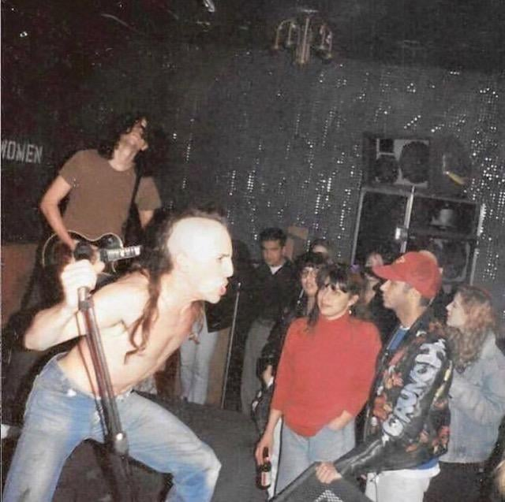
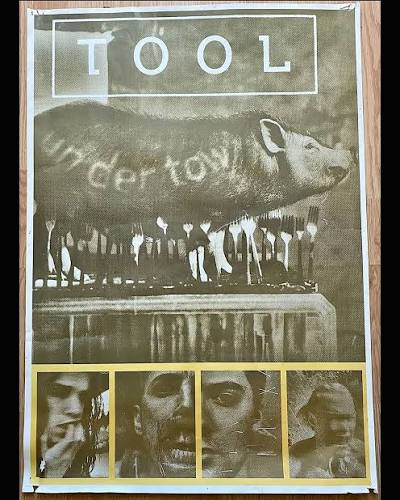
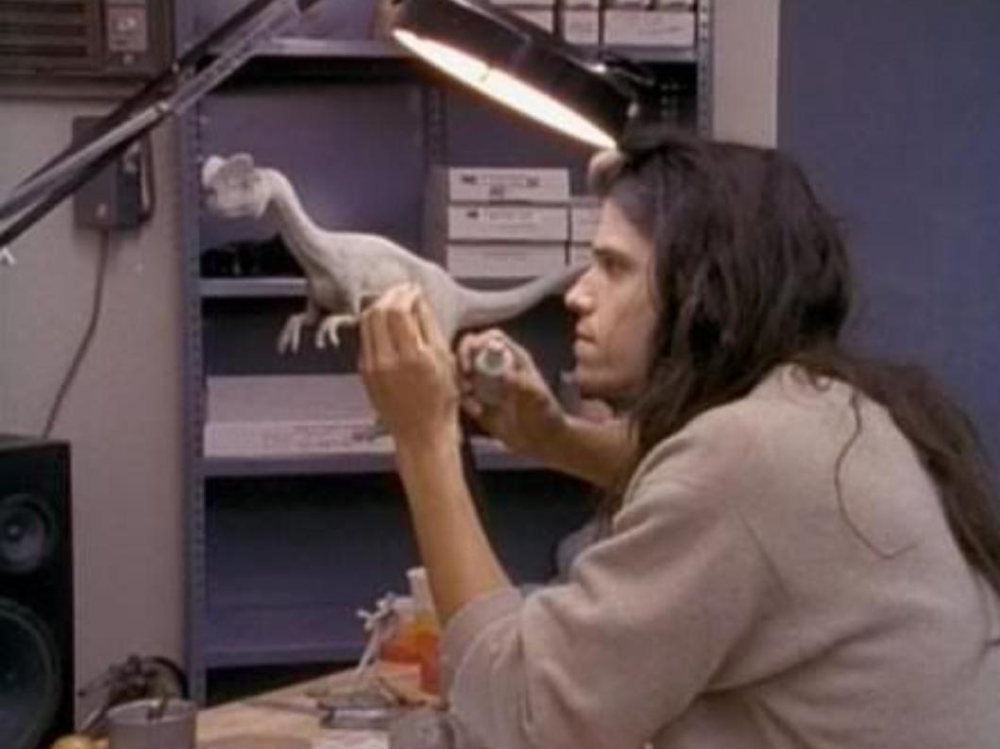
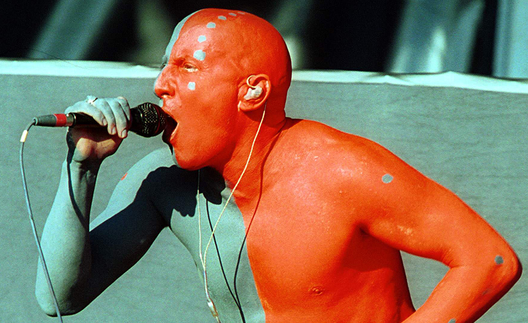
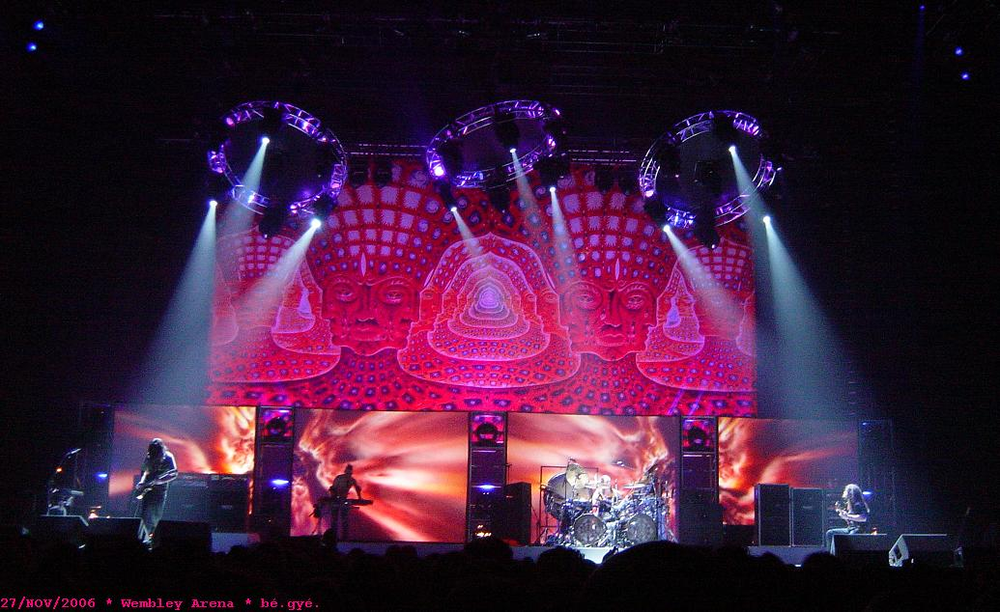
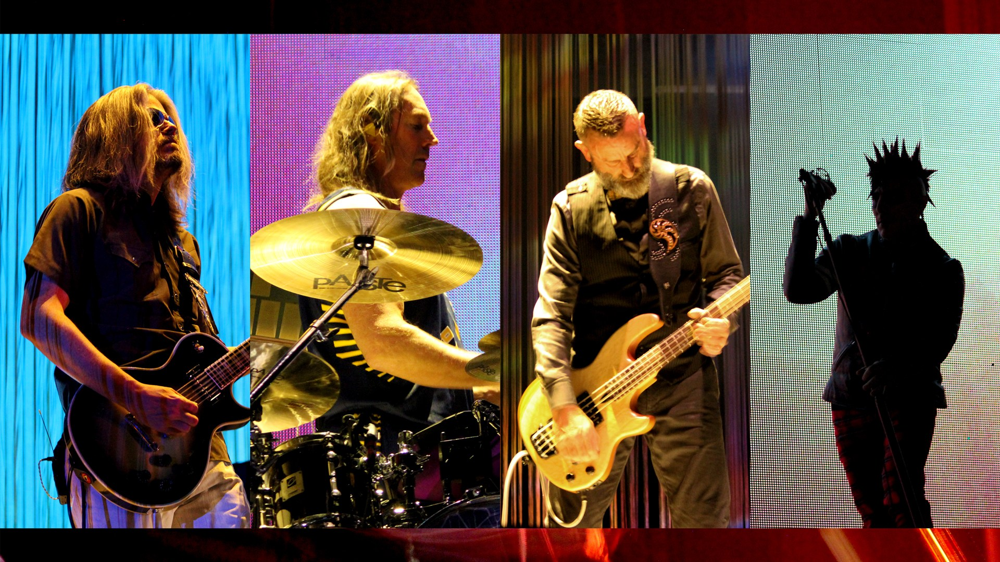
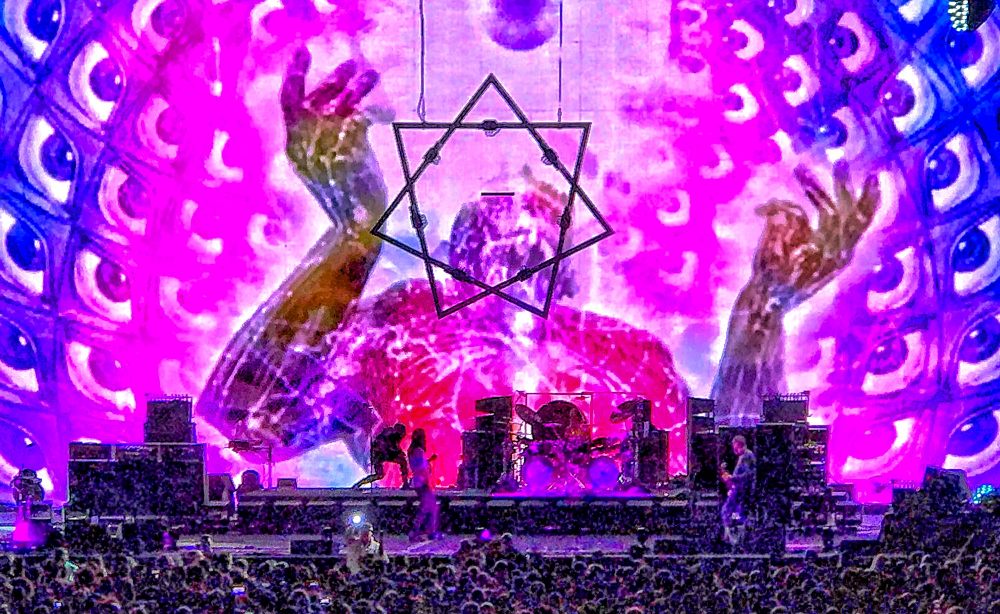

A História da Banda TOOL
Os primeiros anos
O TOOL surgiu em Los Angeles no início dos anos 1990, formado por Maynard James Keenan, Adam Jones, Danny Carey e o baixista Paul D'Amour. Desde o começo, a banda se diferenciava da cena alternativa que dominava a cidade. Havia peso e agressividade em sua música, mas também uma preocupação incomum com estruturas complexas, atmosfera e elementos visuais.
Em 1992, o grupo lançou Opiate, seu primeiro EP. O trabalho apresentava uma versão mais direta e agressiva do que viria a se tornar o som característico da banda. Canções como "Hush" e "Opiate" ajudaram a estabelecer a identidade inicial do grupo, enquanto suas apresentações ao vivo começaram a chamar atenção na cena de Los Angeles.

Undertow
Em 1993 veio Undertow, o primeiro álbum completo. O disco levou a banda a um público muito maior sem abandonar a atmosfera sombria e desconfortável de seus primeiros trabalhos. "Sober", "Prison Sex" e "Bottom" ajudaram a apresentar o TOOL ao grande público, enquanto os videoclipes dirigidos ou concebidos por Adam Jones estabeleceram uma relação cada vez mais forte entre a música e as artes visuais.
O sucesso de Undertow também colocou o TOOL no circuito de grandes festivais. Em 1993, a banda participou da terceira edição da turnê do Lollapalooza, ampliando rapidamente seu alcance nos Estados Unidos.

Ænima e uma nova formação
Durante a produção do álbum seguinte, Paul D'Amour deixou a banda e foi substituído pelo baixista Justin Chancellor. A nova formação seria responsável pela maior parte da história posterior do TOOL.
Em 1996, o grupo lançou Ænima. O álbum representou uma expansão considerável daquilo que havia sido construído em Undertow: as músicas ficaram mais ambiciosas, as estruturas mais elaboradas e a identidade visual passou a ocupar um espaço ainda maior dentro da obra da banda.
"Stinkfist", "Forty Six & 2" e "Ænema" tornaram-se algumas das faixas mais conhecidas do grupo. Os videoclipes, marcados pelo trabalho visual de Adam Jones, reforçaram a característica multimídia que acompanharia o TOOL durante as décadas seguintes. Ænima chegou ao segundo lugar da Billboard 200 e posteriormente recebeu certificação de múltiplas platinas.

Lateralus
Depois de Ænima, o TOOL passou vários anos longe dos estúdios. O resultado desse período foi Lateralus, lançado em 2001.
O álbum levou ainda mais longe a combinação entre metal, rock progressivo e experimentação. Faixas como "The Grudge", "Schism", "Parabola" e "Lateralus" utilizam estruturas extensas e mudanças rítmicas que se tornaram parte fundamental da identidade musical do grupo.
A própria faixa-título tornou-se particularmente conhecida pela relação entre sua letra e a sequência de Fibonacci, enquanto o álbum como um todo consolidou uma estética que combinava música, simbolismo e artes visuais. Lateralus também rendeu ao TOOL um Grammy pela faixa "Schism".

10,000 Days
Cinco anos depois, em 2006, o TOOL lançou 10,000 Days. O álbum manteve a complexidade de Lateralus, mas incorporou uma atmosfera ainda mais expansiva e contemplativa.
Faixas como "Vicarious", "Jambi", "The Pot", "Right in Two" e a dupla "Wings for Marie" / "10,000 Days" mostram diferentes lados da banda, alternando passagens pesadas com longos trechos instrumentais e momentos de grande intensidade emocional.
A turnê que acompanhou o álbum transformou os shows do TOOL em experiências audiovisuais cada vez maiores. Projeções, lasers, iluminação e imagens psicodélicas passaram a ocupar uma posição central no espetáculo, ampliando a relação entre o som da banda e seu universo visual. O álbum foi lançado em maio de 2006 e possui mais de 75 minutos de duração.

O longo silêncio
Depois de 10,000 Days, o TOOL entrou em um dos períodos mais longos de espera de sua carreira. A banda continuou se apresentando e trabalhando em novos materiais, mas seu próximo álbum demoraria mais de uma década para chegar.
Durante esse intervalo, os integrantes também continuaram envolvidos em outros projetos musicais e artísticos. A ausência de um novo álbum acabou se tornando parte da própria história do TOOL: cada nova apresentação e cada pequena notícia sobre o processo de composição alimentavam a expectativa em torno de seu retorno.
Fear Inoculum
Em 2019, treze anos depois de 10,000 Days, o TOOL finalmente lançou Fear Inoculum. O álbum manteve a formação composta por Maynard James Keenan, Adam Jones, Justin Chancellor e Danny Carey e apresentou uma banda ainda mais interessada em desenvolver lentamente suas ideias.
Com cerca de 80 minutos e apenas sete faixas oficiais, Fear Inoculum abandona boa parte da estrutura tradicional de canções curtas e trabalha com composições extensas, mudanças rítmicas e longos desenvolvimentos instrumentais. "Pneuma", "Invincible", "Descending" e "7empest" exemplificam essa abordagem.
O retorno também mostrou que o TOOL não pretendia simplesmente reproduzir o som de seus trabalhos anteriores. Em vez disso, Fear Inoculum apresenta uma banda madura, ainda interessada em experimentar com ritmo, textura, simbolismo e construção atmosférica.

Uma obra construída em camadas
Ao longo de mais de três décadas, o TOOL construiu sua identidade através da combinação de música, imagem e performance. A discografia é relativamente pequena — seis lançamentos principais, contando Opiate como EP —, mas cada período da banda possui uma identidade própria.
Do som mais direto de Opiate e Undertow à experimentação de Ænima, Lateralus e 10,000 Days, chegando à abordagem contemplativa de Fear Inoculum, a história do TOOL é marcada menos pela quantidade de material produzido do que pelo tempo dedicado a desenvolver cada obra.
Essa relação entre música e imagem talvez seja a característica mais constante de sua trajetória. Adam Jones participou diretamente da construção visual de grande parte do universo da banda, enquanto os shows transformaram suas músicas em experiências que combinam som, luz, projeção e espaço.
O resultado é uma obra que não termina quando a música acaba: ela continua nas capas, nos videoclipes, nos palcos e nas imagens que acompanham cada novo capítulo.
